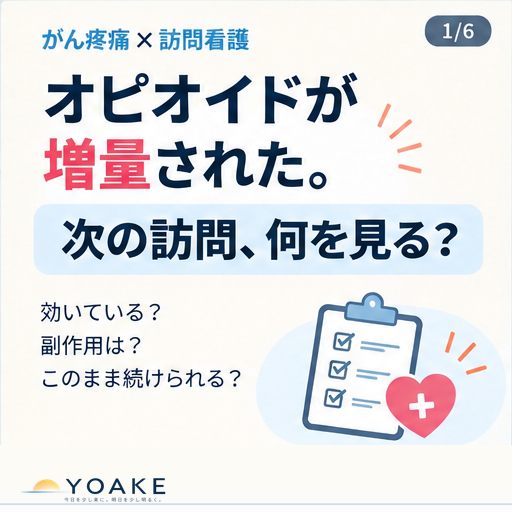
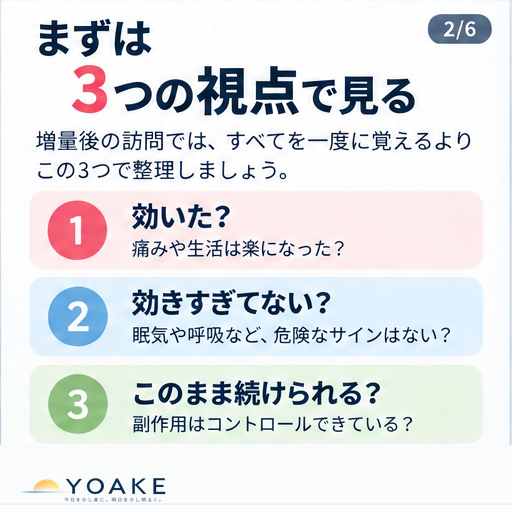

CASE 02 / EDUCATION
新人に「分かりました」と言われた。
でも、できない。
細かなチェックリストを作っても、あまり使われなかった。必要だったのは、もっと詳しい資料ではなく「どこで止まっているか」を見ることでした。
この話を読む ↗YOAKE / FIELD NOTES
訪問看護で起きたこと。
新人を教えていて困ったこと。
AIを使っても仕事が進まなかったこと。
分からないまま進めず、調べる。
ごちゃついていたら、分ける。
そして、誰かが実際に使えるところまで作る。

CASE 01 / VISITING NURSING
がん疼痛で薬が増えたあと、「副作用を見る」だけなら知識としては正しい。
でも訪問の前に知りたかったのは、結局、何から見ればいいのかでした。

FIRST DRAFT
初稿には、
呼吸回数 12回/分以上
という固定した数字が入っていました。
VERIFY / REWRITE
厚生労働省の現在の資料で、その固定閾値の根拠を確認できなかったため、削除。
呼吸回数・呼吸リズム・酸素化を見る
という表現へ戻しました。
正しく見せることより、確認できないものを確認できないまま出さない。
FINISHED ARTIFACT
現場の疑問から始まり、公的資料・ガイドラインを確認し、観察を3方向に分解。1分で見返せる形へ落とし、間違いを検証して修正しました。
OTHER CASES
CASE 02 / EDUCATION
細かなチェックリストを作っても、あまり使われなかった。必要だったのは、もっと詳しい資料ではなく「どこで止まっているか」を見ることでした。
この話を読む ↗CASE 03 / DISASTER PREP
必要な情報を漏らしたくなくて最初から全部確認しようとすると、緊急時にはそれ自体が重くなる。「すぐ知りたい」と「あとで詳しく」に分けました。
CASE 04 / AI & WORKFLOW
調べる、作る、レビューする。AIの数を増やすより先に見るべきだったのは、仕事と仕事のつなぎ目で「どこが止まっているか」でした。
この話を読む ↗A PATTERN I KEEP USING
ABOUT
看護師として12年。小児科、成人病棟、手術室を経験し、現在は訪問看護で働いています。
現場で覚えたことをそのまま発信するというより、仕事の中で「これ、どうすればもっと使いやすくなるんだろう」と引っかかったものを、調べたり、作り直したりしています。
文章を書くこともあります。資料を作ることもあります。AIを使って仕事の流れそのものを組み直すこともあります。
道具は変わります。でも、考えて終わらず、使って、結果を見て、また直す。そこはあまり変わりません。
WHERE WE MAY CONNECT
CONTACT
仕事の中に、ずっと引っかかっていることがあれば、そこから話せます。できることならできると言います。今の自分では難しいことなら、そのまま伝えます。
一度話してみる →